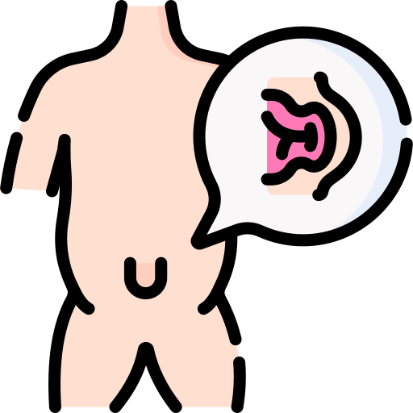

✨ Asuhan Bayi Normal (Standar KIA)
Segera setelah lahir, pastikan bayi mendapatkan:
 Kehangatan
Kehangatan
Keringkan & kontak kulit ke kulit (IMD).
 ASI Eksklusif
ASI Eksklusif
Kolostrum sangat penting bagi imun.

Rawat Tali Pusat
Tetap kering, bersih, dan terbuka.
 DCC
DCC
Penundaan potong tali pusat (Buku KIA).
🧼 Perawatan Tali Pusat (Langkah Aman)
1
Cuci Tangan: Gunakan sabun & air mengalir sebelum memegang tali pusat.
2
Biarkan Terbuka: Jangan dibungkus kassa ketat. Jangan beri alkohol/betadine/ramuan.
3
Posisi Popok: Pasang popok di bawah tali pusat agar tidak terkena kencing/tinja.
4
Kebersihan: Jika kotor, cuci dengan air matang & sabun, lalu keringkan sampai benar-benar kering.
📅 Jadwal Kunjungan Neonatal (KN)
Pastikan bayi diperiksa Tenaga Kesehatan pada:
KN 1
6 - 48 Jam
6 - 48 Jam
KN 2
Hari 3 - 7
Hari 3 - 7
KN 3
Hari 8 - 28
Hari 8 - 28
🍼 Catatan Menyusu (Log)
- Belum ada catatan hari ini.
🔍 Skrining Tanda Bahaya (Waspada!)
Berdasarkan poin pemantauan mandiri Buku KIA:
| Kondisi Bayi | Ya | Tidak |
|---|---|---|
| Sesak / napas cepat / dada tertarik ke dalam | ||
| Lemah / tidak bergerak / merintih | ||
| Kulit biru / pucat / tampak seperti marmer | ||
| Hisapan lemah / muntah hijau / kencing < 6x sehari | ||
| Kejang / mata mendelik / mulut mencucu | ||
| Demam (>37,5°C) atau Dingin (<36,5°C) | ||
| Belum BAB >48 jam / BAB encer / warna dempul | ||
| Tali pusat kemerahan / bernanah / berbau | ||
| Mata merah & bernanah / Kulit bintil nanah | ||
| Belum mendapat imunisasi HB0 atau BCG |